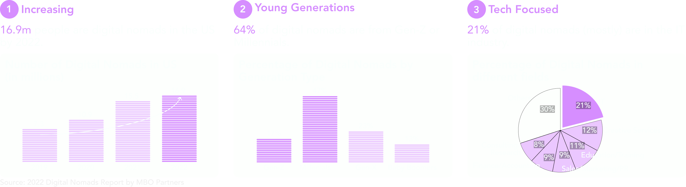
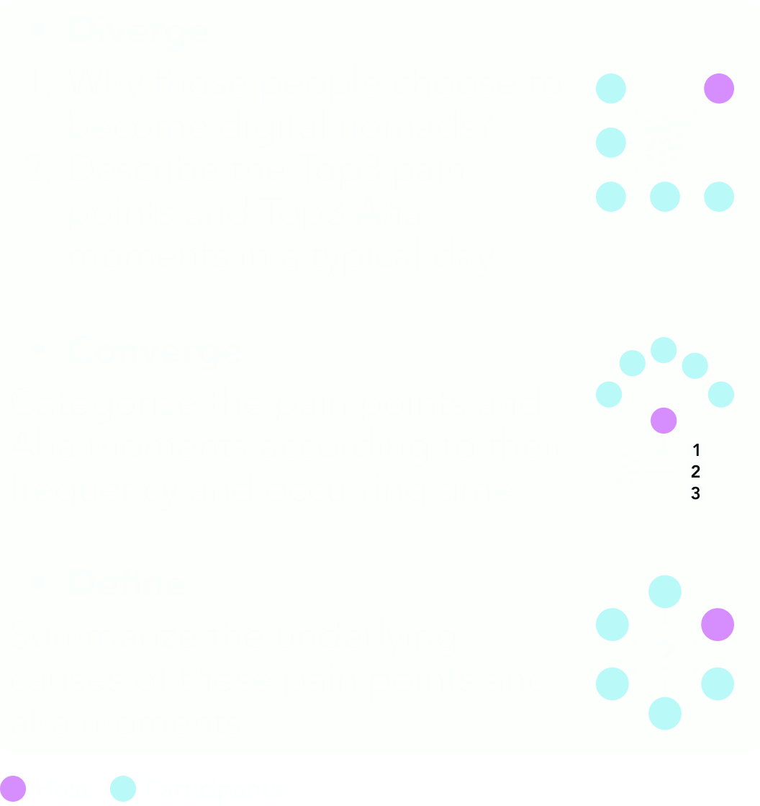
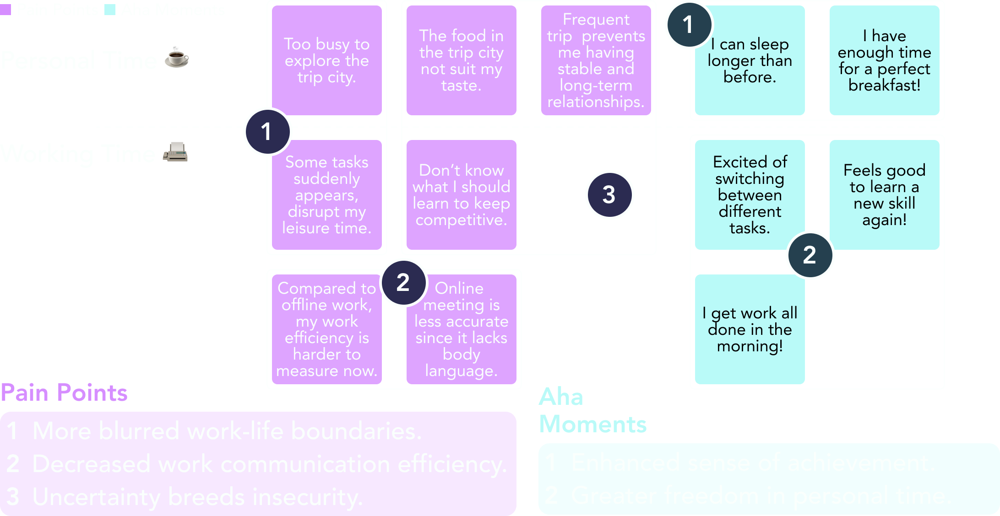

RESEARCH - Understanding digital nomads
# How do workforce and workspaces evolve?
The evolution of human work has led to the emergence of digital nomads, symbolizing a more flexible and liberated approach to employment, potentially shaping the future of work.

# What is digital nomads' current situation?
■ Methodology: Desk Research

# What problems are they facing?
■ Methodology: Co-discovery Workshop - 6 people, 3 hours## Agenda

## Findings
